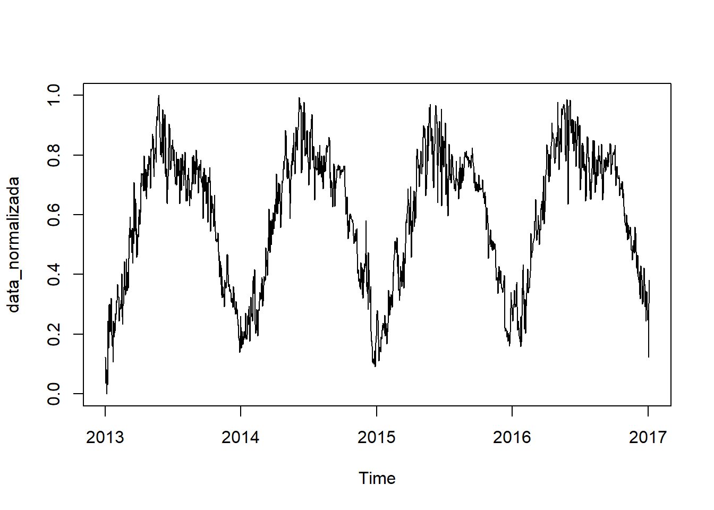
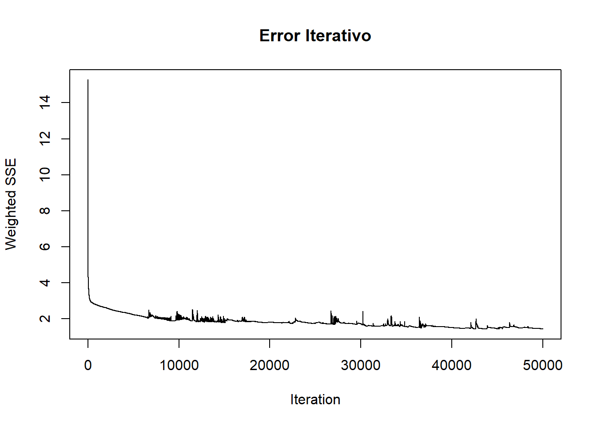
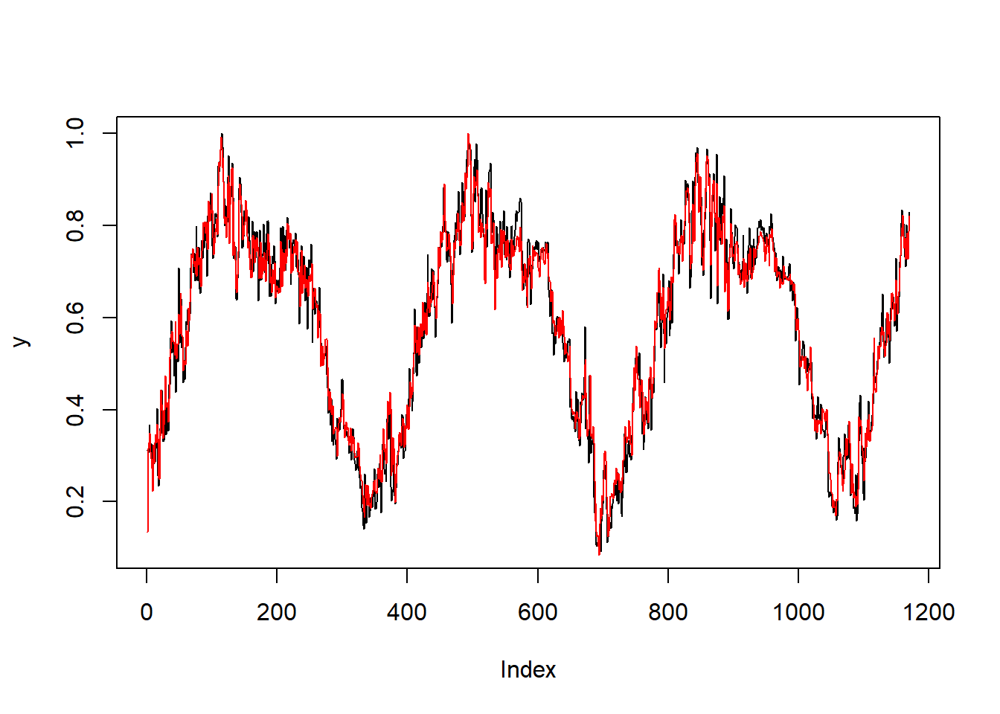
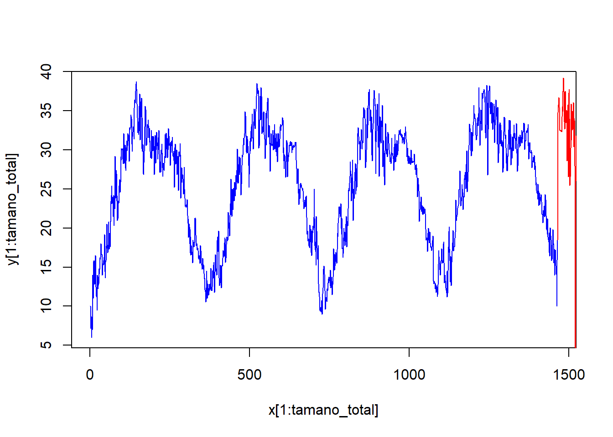
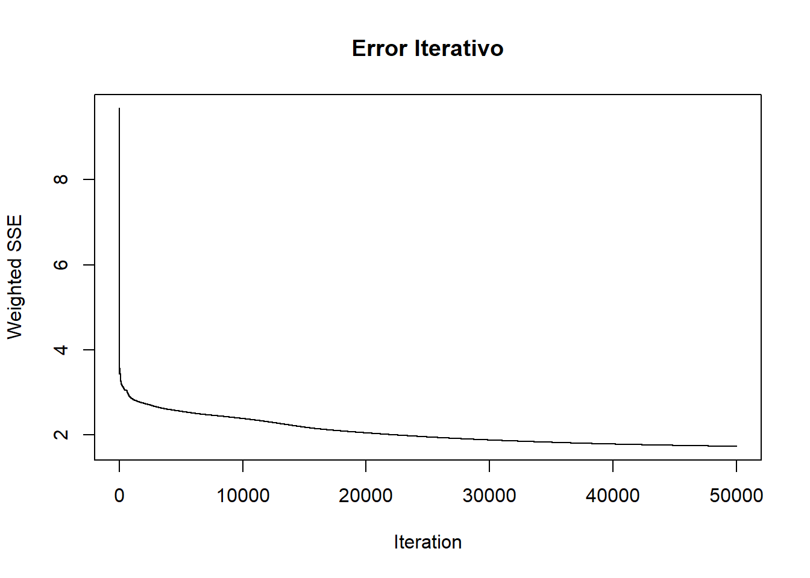
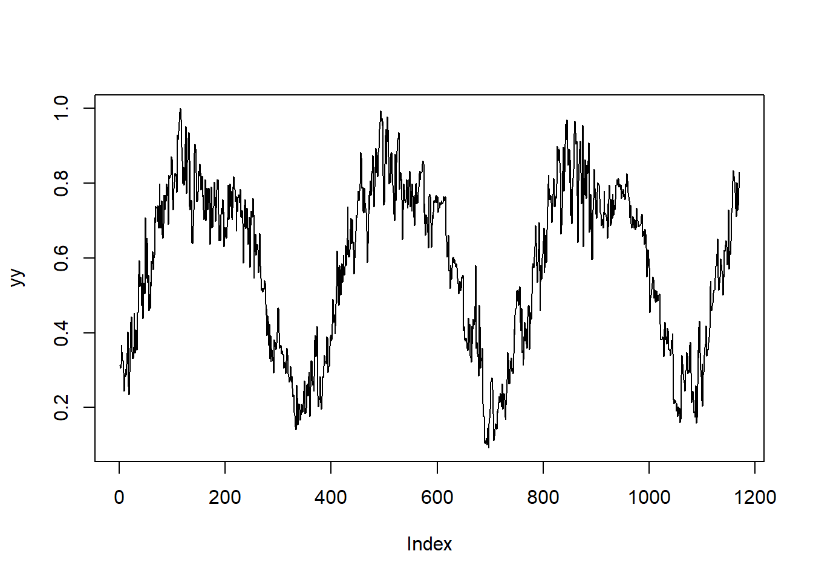
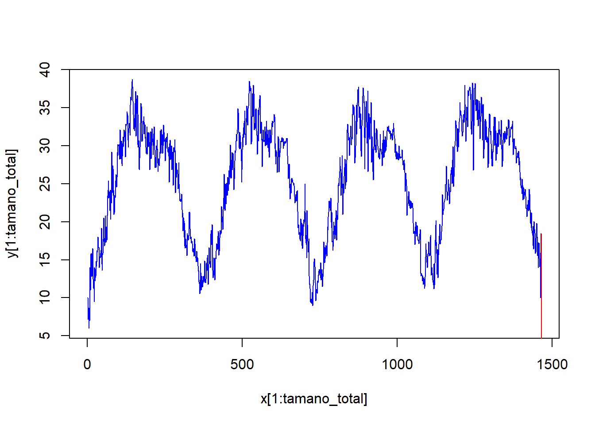

8 Redes Neuronales Recurrentes
Una Red Neuronal Recurrente (RNN, por sus siglas en inglés) es un tipo de red neuronal artificial diseñada para procesar secuencias de datos. A diferencia de las redes neuronales tradicionales que consideran las entradas de forma independiente, las RNNs tienen una estructura interna que les permite mantener una “memoria” de entradas anteriores. Esto se logra a través de conexiones recurrentes que retroalimentan la información de las capas ocultas a sí mismas, lo que les permite capturar dependencias temporales en los datos.
Estas redes están compuestos por:
- Capa de entrada: Recibe la secuencia de datos.
- Capa Oculta: Procesa la información actual y la retroalimenta para influir en el procesamiento futuro.
- Capa de Salida: Genera la salida de la red, que puede ser una predicción o una clasificación.
Cada nodo en la capa oculta no solo recibe la entrada actual sino también la salida de la capa oculta del paso anterior. Esto permite que la red mantenga información sobre lo que ha visto anteriormente y ajuste su salida en consecuencia. Las RNNs son particularmente útiles para el pronóstico de series temporales debido a su capacidad para manejar datos secuenciales y capturar patrones temporales.
En este sentido se trabajará con 2 modelos: Modelo Elman y Modelo Jordan.
8.1 Modelo Elman y Modelo Jordan
8.1.1 Normalización de datos
La normalización se realiza para que las entradas de la red neuronal estén en un rango común, generalmente entre 0 y 1. Esto ayuda a mejorar el rendimiento y la estabilidad del entrenamiento del modelo.
 ### División entre conjunto de entrenamiento y prueba Se divide el conjunto de datos en un 80% para entrenamiento y un 20% para test.
8.1.2 Ventaneo
Se crea un conjunto de datos con un n columnas donde cada columna representa un valor futuro de la serie temporal, utilizando una variable de tipo zoo, equivalente al período de retardo de la serie.Dado que esta serie temporal es diaria, y se toma desde enero de 2013 a marzo de 2017, se construyen 30 columnas que corresponden a 30 días. Esta técnica es conocida como “ventaneo”.
Primero se convierte la variable en tipo zoo y se crea una función que construya estas columnas y un dataframe vacío donde estarán todas las columnas.
Se aplica la función 30 veces y se combinan los resultados.
for (n in 1:30) {
datalogN[[n]] <- crear_columna(y, n)
}
datalogN <- do.call(cbind, datalogN)
colnames(datalogN) <- paste0("x", 1:30)
datalogN<-cbind(y,datalogN)Cuando se tiene el conjunto de datos se eliminan los NA desplazando la serie.
8.2 Modelo Elman
Es una Red neuronal recurrente simple que incorpora una capa de contexto para almacenar y utilizar la información de los estados anteriores de la red, permitiendo así que el modelo tenga una “memoria” a corto plazo.
Estas redes están compuestos por:
- Capa de entrada: Recibe la secuencia de datos.
- Capa Oculta: Realiza las transformaciones no lineales. Se retroalimenta a sí misma a través de la capa de contexto.
- Capa de Contexto: Almacena los valores anteriores de la capa oculta y los usa como entradas adicionales en el siguiente paso de tiempo.
- Capa de Salida: Genera la salida de la red, que puede ser una predicción o una clasificación.
Se configura la red de Elman explorando diversas combinaciones de neuronas en las capas ocultas y número máximo de iteraciones, y aunque apenas se ha explorado el ritmo de aprendizaje, se busca ajustar la curva de predicción al modelo de la serie de la mejor manera posible. se ha establecido una semilla para asegurar la reproducibilidad de los resultados al crear nuestra red neuronal.
set.seed(123)
fit<-elman(inputs[train_data],outputs[train_data],size=c(12,5),learnFuncParams=c(0.1),maxit=50000)- Se nota la evolución del error de red con el número de iteraciones para los parámetros expuestos.

- Se observa que el error converge rápidamente a 0.
Luego se procede a realizar la predicción utilizando los datos restantes de la serie, es decir, los datos seleccionados para el conjunto de prueba. Una vez entrenado el modelo, se evalua y visualiza gráficamente para analizar su ajuste.
y <- as.vector(outputs[-test_data])
plot(y,type="l")
pred <- predict(fit, inputs[-test_data])
lines(pred,col = "red")
El modelo tiene un ajuste satisfactorio con los parámetros elegidos, ya que la curva del modelo sigue de cerca la curva de la serie predicha. Ahora, aprovechando el efecto de memoria, se avanza la serie temporal al menos en un valor con alta precisión. Para lograr esto, se reintroducen los datos de entrenamiento.
- Se Desnormalizan los datos.
- Representación de los valores predichos.
x <- 1:(tamano_total+length(predicciones))
y <- c(as.vector(ts_data),predicciones)
plot(x[1:tamano_total], y[1:tamano_total],col = "blue", type="l")
lines( x[(tamano_total):length(x)], y[(tamano_total):length(x)], col="red")
8.3 Modelo Jordan
La principal diferencia entre el modelo Jordan y el modelo Elman radica en cómo se realiza la retroalimentación de la capa oculta:
- Capa de Entrada: Recibe la secuencia de datos de entrada, similar al modelo Elman.
- Capa Oculta: Realiza transformaciones no lineales sobre los datos de entrada. En el modelo Jordan, la capa oculta no se retroalimenta a sí misma directamente como en el modelo Elman.
- Capa de Contexto: En el modelo Jordan, la retroalimentación se realiza desde la capa de salida hacia la capa de contexto. La capa de contexto almacena y utiliza la salida generada en el paso de tiempo anterior como entrada adicional en el siguiente paso de tiempo.
- Capa de Salida: Genera la salida final de la red neuronal, que puede ser una predicción en modelos de series temporales o una clasificación en modelos de aprendizaje supervisado. En el modelo Jordan, la salida también se utiliza para retroalimentar la capa de contexto.
Construcción del modelo
set.seed(42)
fit_jordan <-jordan(inputs[train_data],outputs[train_data],size=12,learnFuncParams=c(0.1),
maxit=50000)
plotIterativeError(fit_jordan, main = "Error Iterativo")
# Comparación
yy <- as.vector(outputs[-test_data])
plot(yy,type="l")
predd <- predict(fit_jordan, inputs[-test_data])
lines(predd,col = "red")
# Predicciones
predictions <- predict(fit_jordan,inputs[-train_data])
predicciones_jordan <- predictions*(max(ts_data)-min(ts_data))+min(ts_data)# Predicciones
x <- 1:(tamano_total+length(predicciones_jordan))
y <- c(as.vector(ts_data),predicciones_jordan)
plot(x[1:tamano_total], y[1:tamano_total],col = "blue", type="l")
lines( x[(tamano_total):length(x)], y[(tamano_total):length(x)], col="red")
Métricas para el modelo Jordan
prediccionesc_jordan <- predicciones_jordan[1:30]
prediccionesjordan_ts <- ts(prediccionesc_jordan, start = c(2017,84), end = c(2017, 113), frequency = 365)8.3.1 Desempeño de la red de Jordan
## ME RMSE MAE MPE MAPE ACF1 Theil's U
## Test set 263 263 263 870 870 0.76 1858.3.2 Análisis de resultados
Al comparar el desempeño entre las redes de Elman y Jordan aplicadas a la serie de tiempo, la red de Elman mostró un rendimiento significativamente superior. Las métricas de error, incluyendo RMSE, MAE y MAPE, fueron considerablemente más bajas en Elman, indicando predicciones más precisas y cercanas a los valores reales de la stemperaturras. Además, la red de Elman presentó menor autocorrelación en los errores (ACF1) y un menor valor de Theil’s U, sugiriendo una mejor capacidad predictiva y una mayor estabilidad en comparación con Jordan.